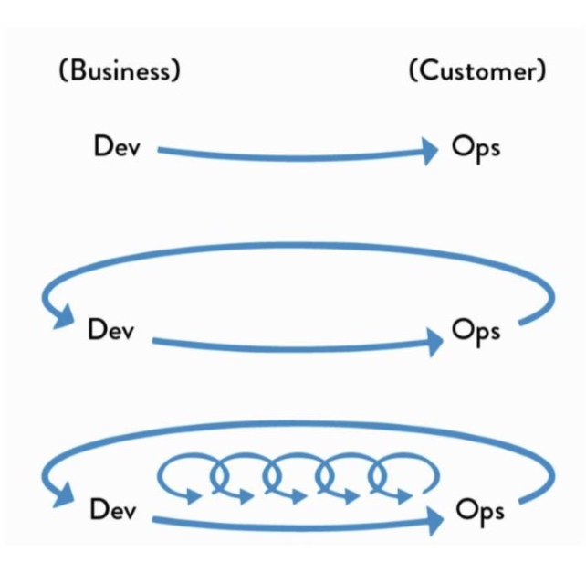

思考
DevOps如何实施的基层视角，DevOps实施为啥难？
什么是DevOps？
简单说最初的概念来源软件交付内部，研发人员与运维人员天然的矛盾，研发人员需要持续开发以响应业务需求，但运维人员的核心KPI是稳定性，因此无可避免的矛盾就此产生。如何解决这个问题？共识就是减少人工，通过工具进行标准化的变更，将一个一个业务需求变更类似于生产车间流水线上的商品，标准化的批量交付到用户手中。
后来DevOps的概念不断泛化，从DevSecOps、DevSevBizOps，眼花缭乱，但无论如何逃不开所谓的关注价值流流动与“三步工作法”：

DevOps实施的三个步骤
第一步是从左到右快速流动
第二步是从右到左快速反馈
第三步是在整个过程中持续学习。
本质上就是加快交付以及反馈，持续改进，当然这跟把大象装进冰箱的问题一样，道理我都懂，依旧过不好这一生。
无数企业与团队永远卡死在了这第一步，从坐到右快速的流动，小团队的问题从来都是难题，这跟敏捷一样，规模化的协同以及产出的稳定是企业关注的永恒话题。
什么样的企业需要DevOps？
关于一站式研发门户建设的必要性
业内大家一直对各种一站式的工具平台有很多争议的声音，阿里、蚂蚁、腾讯、京东、华为、微软也都有各自的产品，阿里在云效，
有一派的论述是这些工具任何一个单点都不如各领域内的“旗舰”产品，整合带来的遍历，蚂蚁甚至喊出了让开发人员体会丝般顺滑的口号，但实际的结果未必尽如人意。那么为什么，在一些企业还是需要进行一站式工具平台的建设？
我们从如下几个角度进行分析：
- 人员能力：承认存在精英团队，存在10倍效能工程师，但不能讳言，平庸才是常态，大多数的我们属于“普通人”，甚至在多数金融类企业内部，外包厂商才是开发的绝对主力，人员能力更是参差不齐，因此通过一站式的平台封装掉不必要的要素，帮助开发更集中于自己需要关注的点，进行组织内部开发人员行为的基本规范、质量底线的守护。这当然对于团队中的少数Geek或许感受到一种带锁链跳舞的感觉，但对于技术实力普遍不太强的团队收益较大。
- 工具层面：
单一可信数据源
关于协同的设计
对于大型企业来说，以我曾亲身经历的跨国通信研发企业来说，往往一个产品线就是数百到千开发人员的规模，其文档、流程、交付模式、
平台的意义？
有人说平台的意义是服务，有人说平台的意义在于更加细粒度的数字化管理，平台真正的服务者是谁？
工作的“心流”很重要，如何尽量减少打断也是一门课题